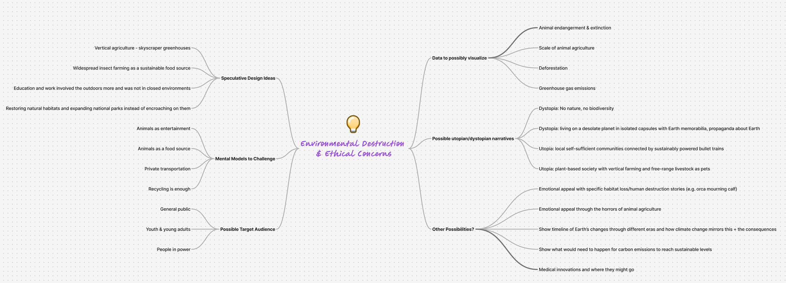
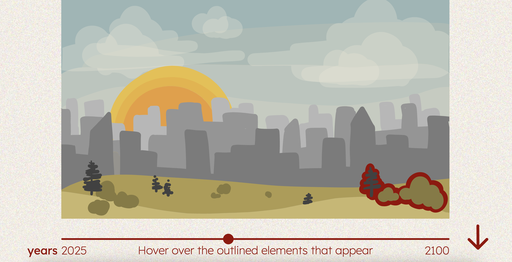
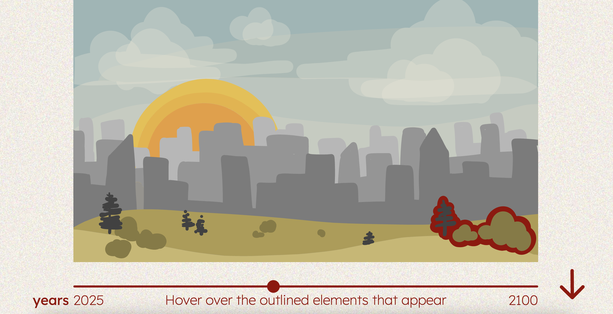

My goal with my capstone project was to tackle issues in the environmental space and/or bring controversial ethical issues to light. I struggled with the broad nature of these problems, and how to narrow it enough for a single project. Through mind-mapping, I explored possible speculative, illustrative, and data-driven narratives. My interest in animal advocacy was a strong theme throughout my ideas, so I decided to hone in on that and focus on animal agriculture, since it relates to both environmental degradation as well as ethically problematic practices.
The goal of the project is to encourage awareness about the horrific practices that happen within the animal agriculture industry, and the impact these have on the environment. I want people to consider how their daily habits are affecting other sentient beings and the planet. The target audience is young adults in their 20's, who are more open to changing habits than older generations, and also have the independence to do so.
 
